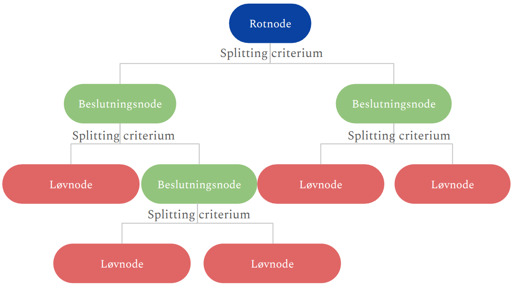
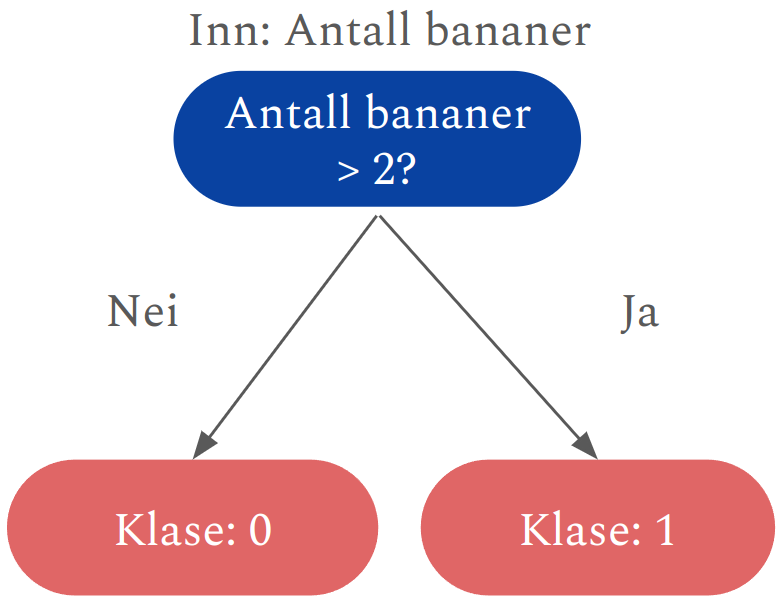

Beslutningstrær
Et beslutningstre er en rekke ja/nei-spørsmål om dataene. Det er en av de mest intuitive modellene vi har, og det er byggesteinen i random forest og gradient boosting, som ofte er de beste modellene på tabulære data. I dette kapittelet lærer du hvordan treet velger spørsmålene sine, og hvorfor.
Etter dette kapittelet skal du kunne
- forklare rotnode, beslutningsnode, løvnode og trestump, og hva et splitt-kriterium er
- regne ut Gini-urenhet, entropi, vektet urenhet etter en splitt og informasjonsgevinst $\Delta I$ med enkel kalkulator
- velge beste splitt ut fra lavest vektet Gini eller størst $\Delta I$
- sammenligne Gini, entropi og log loss, og forklare hvorfor Gini er standard i sklearn
- gjengi pseudokoden for å bygge et tre, med stoppkriterier og hva blandede løvnoder returnerer
- forklare hvorfor trær lager aksejusterte beslutningsflater, hvorfor de ikke trenger skalering, og hvordan dybden styrer over- og undertilpasning
5.1Hva er et beslutningstre?
Tenk på leken «Gjett hvem?». Du stiller spørsmål som «Har personen briller?», og for hvert svar faller en del av kandidatene bort. Et beslutningstre gjør det samme med data: det stiller ett spørsmål om én feature om gangen, og sender datapunktet til venstre eller høyre etter svaret. Til slutt havner punktet i en «skuff» som har et svar klart.
Treet har en fast vokabular, som du bør kunne til eksamen:
- Rotnoden (root node) er toppen av treet. Her kommer alle data inn, med alle features.
- Beslutningsnoder (decision nodes) er nodene under roten som også splitter dataene. Både roten og beslutningsnodene har et splitt-kriterium (splitting criterion).
- Løvnoder (leaf nodes) ligger nederst og splitter ikke. De inneholder den predikerte verdien for et datapunkt som havner der.
- En trestump (tree stump) er det minste mulige treet: én rotnode og $n$ løvnoder, én for hvert mulig utfall. Vi holder oss til $n = 2$, altså to utfall per splitt (binære trær).


Et splitt-kriterium består av to ting: en feature og en terskel (for kategoriske features: en verdi eller en gruppe verdier). «$x_1 \le 5$» er et splitt-kriterium; «flipperlengde $\le 206$ mm» er et annet. Alle punkter som oppfyller kriteriet går én vei, resten går den andre veien.
Å bruke treet kalles inferens: et nytt punkt starter i roten og følger ja/nei-svarene ned til en løvnode, der prediksjonen står. Punktet $(x_1, x_2) = (7, 3)$ svarer «nei» på $x_1 \le 4$ og «ja» på $x_2 \le 6$, og får klasse 1.
Et tre er et flytskjema som er laget av data. Noder spør, løv svarer. Hver vei fra rot til løv er en regel av typen «HVIS $x_1 \gt 4$ OG $x_2 \le 6$ SÅ klasse 1».
Et viktig poeng fra notatene: de samme treningsdataene kan gi mange ulike trær. Vi kan starte med en annen feature i roten, velge andre terskler eller stoppe på ulike dybder, og likevel få trær som klassifiserer treningsdataene like godt. Det er derfor vi trenger et prinsipp for hvilket spørsmål vi skal stille først. Det er tema for resten av kapittelet.
Hvilken type node inneholder selve prediksjonen for et datapunkt?
- Rotnoden, fordi alle data passerer den
- Beslutningsnoden nærmest løvene
- Alle noder har en prediksjon, og svaret er gjennomsnittet av dem
- Løvnoden
Hva er en trestump (med $n=2$)?
- Et tre med én rotnode og to løvnoder, altså ett eneste splitt
- Et tre der alle løvnoder er rene
- Et tre som er beskåret (pruned) etter treningen
- Den delen av et tre som ligger under en beslutningsnode
Hva må et splitt-kriterium i en beslutningsnode angi (for numeriske features)? Velg alle som stemmer.
- Hvilken feature det skal splittes på
- En terskelverdi for den featuren
- En vekt $w$ for hver feature, som i logistisk regresjon
- Hvilken klasse løvnoden under skal predikere
5.2Hvilket spørsmål først? Reduser usikkerheten
Gode «Gjett hvem?»-spillere spør ikke «Heter personen Bernt?» først. De spør noe som deler kandidatene omtrent i to, fordi det fjerner mest usikkerhet. Beslutningstrær følger samme idé:
Ved hver node velger vi det splitt-kriteriet (feature og verdi) som reduserer usikkerheten mest mulig, slik at vi kan ta beslutningen tidligst mulig. Redusert usikkerhet = usikkerhet før splitten minus (vektet) usikkerhet etter splitten.
«Usikkerhet» betyr her hvor blandede klassene er i en node. En node med bare blå punkter er ren (pure): der er vi helt sikre. En node med halvparten av hver er maksimalt uren (impure). Notatene nevner tre mål på urenhet:
- Log loss (cross-entropy), som du kjenner fra logistisk regresjon (kapittel 2),
- Gini-urenhet (Gini impurity),
- Entropi (entropy), som du kjenner fra kapittel 4.
Eksamen 2024 oppg. 15 spurte rett og slett: «Hvordan bestemmer et beslutningstre hvilken feature det skal dele på i en gitt node?» Riktig svar: den som maksimalt reduserer usikkerheten i datasettet.
En node vurderer fire mulige splitter. Hvilket prinsipp bruker et vanlig beslutningstre (som sklearn sin) for å velge mellom dem?
- Det velger featuren med færrest unike verdier, fordi den gir lavest entropi
- Det velger featuren med størst varians, slik som PCA
- Det velger splitten som gir størst reduksjon i urenhet (for eksempel lavest vektet Gini etter splitten)
- Det velger en tilfeldig feature, slik at treet ikke overtilpasser
5.3Gini-urenhet
Intuisjon: pose med kuler
Du har en pose med kuler i ulike farger, der farge = klasse. Du trekker en kule tilfeldig, og gjetter fargen ved å trekke et tilfeldig «svar» fra samme fargefordeling som i posen. Gini-urenheten er sannsynligheten for at du gjetter feil.
- Nesten alle kulene har samme farge: du gjetter nesten alltid riktig. Lav Gini, lav urenhet.
- Fargene er likt representert: du gjetter ofte feil. Høy Gini, høy urenhet.
Gini-urenhet for et datasett $D$ med $k$ klasser (notatenes likning 44)
$$\text{Gini}(D) = 1 - \sum_{i=1}^{k} p_i^2$$der $p_i$ er andelen av punktene i noden som tilhører klasse $i$.
Hvorfor blir «sannsynlighet for feil gjetning» lik $1-\sum p_i^2$?
Kulen er av klasse $i$ med sannsynlighet $p_i$. Gjetningen din er uavhengig, og er feil hvis den ikke er $i$, som skjer med sannsynlighet $1-p_i$. Summerer vi over alle klasser:
$$P(\text{feil}) = \sum_{i=1}^{k} p_i\,(1-p_i) = \sum_i p_i - \sum_i p_i^2 = 1 - \sum_i p_i^2,$$fordi $\sum_i p_i = 1$. Leddet $\sum_i p_i^2$ er sannsynligheten for å gjette riktig (begge «trekkene» gir samme farge).
Tabell 6 fra notatene
| $n_1$ | $n_2$ | $p_1$ | $p_2$ | Gini $= 1-p_1^2-p_2^2$ | |
|---|---|---|---|---|---|
| Alt A | 0 | 10 | 0 | 1 | $1-0^2-1^2 = 0$ |
| Alt B | 3 | 7 | 0.3 | 0.7 | $1-0.09-0.49 = 0.42$ |
| Alt C | 5 | 5 | 0.5 | 0.5 | $1-0.25-0.25 = 0.5$ |
Notatenes oppgave: «Hvilken splitt bør vi velge, og hvorfor?» Svar: den som gir lavest Gini-urenhet, altså Alt A, fordi noden da er ren og vi kan ta beslutningen med en gang.
En node har Gini-urenhet 0. Hva betyr det?
- Noden har like mange punkter fra hver klasse
- Noden er tom
- Featuren i noden har ingen sammenheng med target
- Alle punktene i noden tilhører samme klasse
Hvor stor kan Gini bli?
Gini er størst når alle $k$ klasser er like vanlige, $p_i = 1/k$:
$$\text{Gini}_{\max} = 1 - k\cdot\left(\frac{1}{k}\right)^2 = 1-\frac{1}{k}.$$For to klasser gir det $0.5$, for tre klasser $2/3 \approx 0.67$, for fire klasser $0.75$.
Notatene sier at Gini «er et tall i $[0, 0.5]$». Det stemmer bare for to klasser. Generelt ligger Gini i $[0,\, 1-1/k]$. Med tre like store klasser er Gini $\approx 0.67$, altså over 0.5.
Hvilke utsagn om maksimal Gini-urenhet stemmer? Velg alle riktige.
- For to klasser er maksimal Gini 0.5
- For alle klassifiseringsproblemer er Gini alltid mellom 0 og 0.5
- For tre like store klasser er Gini $2/3$
- Maksimal Gini er 1, og nås når noden er ren
En node har 6 positive og 2 negative punkter. Hva er Gini-urenheten?
En node har 10 punkter fordelt på tre klasser: 2, 3 og 5. Hva er Gini-urenheten?
Gini etter en splitt: vektet gjennomsnitt
En splitt lager to barnenoder, $D_1$ og $D_2$, med $n_1$ og $n_2$ punkter ($n_1+n_2 = n$). Vi vil ha ett tall for hvor god splitten er, så vi tar et vektet gjennomsnitt av barnenes Gini, der vekten er andelen punkter som havner i hver node:
Vektet Gini etter splitt på feature $f$ (likning 45)
$$\text{Gini}_f(D) = \frac{n_1}{n}\,\text{Gini}(D_1) + \frac{n_2}{n}\,\text{Gini}(D_2)$$Uten vekting kunne treet «jukse» ved å skille ut ett enkelt punkt i en egen, perfekt ren node. Den lille noden har Gini 0, men den store noden er like blandet som før. Vektingen sørger for at en ren node med 1 punkt teller lite, mens en ren node med 50 punkter teller mye.
Regneeksempel: hvilken splitt er best?
En node har 10 blå og 10 oransje punkter (Gini $= 0.5$). To kandidater:
- Splitt A på $x_1$: venstre (8 blå, 2 oransje), høyre (2 blå, 8 oransje).
- Splitt B på $x_2$: venstre (10 blå, 4 oransje), høyre (0 blå, 6 oransje).
Regn ut vektet Gini for begge, steg for steg
A: Begge barn har fordeling $(0.8, 0.2)$: $\text{Gini} = 1 - 0.64 - 0.04 = 0.32$. Vektet: $\frac{10}{20}\cdot 0.32 + \frac{10}{20}\cdot 0.32 = 0.32$.
B: Venstre har 14 punkter, $p = (10/14, 4/14)$: $\text{Gini} = 1 - \frac{100+16}{196} = \frac{80}{196} \approx 0.408$. Høyre er ren: Gini $=0$. Vektet: $\frac{14}{20}\cdot 0.408 + \frac{6}{20}\cdot 0 \approx 0.286$.
Konklusjon: B har lavest vektet Gini ($0.286 \lt 0.32$), så treet velger B. Reduksjonen i urenhet er $0.5 - 0.286 = 0.214$ for B og $0.5-0.32 = 0.18$ for A.
En node med 6 positive og 6 negative splittes i venstre (6 positive, 2 negative) og høyre (0 positive, 4 negative). Hva er vektet Gini etter splitten?
Eksamen 2025 del 2.4: tre features gir vektet Gini etter splitt på henholdsvis 0.28, 0.41 og 0.07. Riktig valg er featuren med lavest verdi (0.07). Typisk felle er å tro at høy Gini er «mer informasjon».
Rotnoden vurderer tre features. Vektet Gini etter splitt er: Alder 0.33, Inntekt 0.12, Bosted 0.47. Hvilken feature velges?
- Bosted, fordi høyest Gini betyr at featuren skiller mest
- Alder, fordi den ligger nærmest 0.25, som er midt i intervallet
- Inntekt, fordi den gir lavest urenhet etter splitten
- Det spiller ingen rolle, siden alle splittene er gyldige
Legg merke til: (1) begge kurvene er 0 når noden er ren ($p=0$ eller $p=1$) og størst ved $p=0.5$; (2) entropi har maks 1, Gini har maks 0.5; (3) skrur du på «entropi / 2», ser du at kurvene har nesten samme form. Det er derfor de nesten alltid velger samme splitt.
5.4Entropi og informasjonsgevinst
Entropi måler også hvor blandet en fordeling er, men på en annen skala: hvor mange ja/nei-spørsmål (bits) trenger du i snitt for å finne klassen? Er noden ren, trenger du ingen spørsmål (0 bits). Er det 50/50, trenger du ett (1 bit).
Entropi for en fordeling over $k$ klasser (likning 46)
$$I(p_1,\dots,p_k) = -\sum_{i=1}^{k} p_i \log_2 p_i \qquad (\text{med } 0\cdot\log_2 0 = 0)$$Notatenes oppgave: entropien til $(0.5, 0.5)$ er $-2\cdot 0.5\log_2 0.5 = 1$. Entropien til $(0.01, 0.99)$ er $-0.01\log_2 0.01 - 0.99\log_2 0.99 \approx 0.066 + 0.014 = 0.081$. Den skjeve fordelingen har nesten ingen usikkerhet. For en binær fordeling er maks entropi 1 (lik fordeling) og min 0 (ren node). Med $k$ klasser er maks $\log_2 k$.
$\log_2 x = \dfrac{\ln x}{\ln 2}$. Nyttige verdier: $\log_2 0.5 = -1$, $\log_2 0.25 = -2$, $\log_2 0.75 \approx -0.415$, $\log_2(1/3) \approx -1.585$.
Regn ut entropien til fordelingen $(0.01, 0.99)$ med tre desimaler.
En node har 2 positive og 6 negative punkter. Hva er entropien?
Før og etter en splitt
Før splitten har noden $p$ positive og $n$ negative punkter:
Entropi før splitt (likning 47)
$$I_{\text{før}} = I\!\left(\frac{p}{p+n},\ \frac{n}{p+n}\right)$$Etter splitten har vi to barnenoder $i = 1,2$ med $p_i$ positive og $n_i$ negative. Den forventede entropien er det vektede gjennomsnittet, akkurat som for Gini:
Forventet entropi etter splitt (likning 48) og informasjonsgevinst (likning 49)
$$E[I_{\text{etter}}] = \sum_{i=1}^{s}\frac{p_i+n_i}{p+n}\, I\!\left(\frac{p_i}{p_i+n_i},\ \frac{n_i}{p_i+n_i}\right), \qquad \Delta I = I_{\text{før}} - E[I_{\text{etter}}]$$Her er $s$ antall barn ($s=2$ for oss). $\Delta I$ kalles informasjonsgevinst (information gain), og vi velger splitten med størst $\Delta I$. Siden $I_{\text{før}}$ er lik for alle kandidat-splitter i samme node, er det det samme som å velge lavest $E[I_{\text{etter}}]$.
Notatenes oppgave: $p=9$, $n=5$
Vis at $I_{\text{før}} = 0.94$ og regn ut gevinsten for splitten (4,5) / (5,0)
Før: $I_{\text{før}} = -\frac{9}{14}\log_2\frac{9}{14} - \frac{5}{14}\log_2\frac{5}{14} = 0.643\cdot 0.637 + 0.357\cdot 1.485 \approx 0.410 + 0.530 = 0.940$.
Etter: Venstre barn har $(p_1, n_1) = (4, 5)$, altså 9 punkter. Høyre har $(5, 0)$, 5 punkter, og er ren (entropi 0).
$$E[I_{\text{etter}}] = \frac{9}{14}\,I\!\left(\tfrac{4}{9},\tfrac{5}{9}\right) + \frac{5}{14}\cdot 0 = -\frac{9}{14}\left(\tfrac{4}{9}\log_2\tfrac{4}{9} + \tfrac{5}{9}\log_2\tfrac{5}{9}\right)$$$I(4/9, 5/9) = 0.444\cdot 1.170 + 0.556\cdot 0.848 \approx 0.520 + 0.471 = 0.991$. Altså $E[I_{\text{etter}}] = 0.643\cdot 0.991 \approx 0.64$.
Gevinst: $\Delta I = 0.940 - 0.637 \approx 0.30$ bits.
Regn ut $I_{\text{før}}$ for en node med $p=9$ positive og $n=5$ negative (to desimaler).
Samme node splittes i $(p_1,n_1) = (4,5)$ og $(p_2,n_2)=(5,0)$. Hva er informasjonsgevinsten $\Delta I$ (to desimaler)?
Gå tilbake til eksemplet med 10 blå og 10 oransje ($I_{\text{før}} = 1$). Splitt B ga venstre (10 blå, 4 oransje) og høyre (0, 6). Hva er $\Delta I$ for splitt B? (Hint: $I(10/14, 4/14) \approx 0.863$.)
For en node har du regnet ut $E[I_{\text{etter}}]$ for tre kandidat-splitter: 0.81, 0.55 og 0.92. $I_{\text{før}} = 0.97$. Hvilken splitt velges, og hva er gevinsten?
- Splitten med 0.92, fordi den har størst entropi og dermed mest informasjon; $\Delta I = 0.92$
- Splitten med 0.55; $\Delta I = 0.97 - 0.55 = 0.42$
- Splitten med 0.81, fordi den ligger nærmest $I_{\text{før}}$ og derfor bevarer mest informasjon
- Splitten med 0.55; $\Delta I = 0.55$
En node har fire klasser med 25 % hver. Hva er entropien (i bits)?
- 2
- 1
- 0.75
- 0.25
Prøv selv: finn den beste splitten
Blå = klasse 1, oransje = klasse 0. Den nederste grafen viser vektet Gini (heltrukken) og vektet entropi / 2 (stiplet) for alle terskler på valgt feature. Bunnpunktet er den beste terskelen. Legg merke til at kurvene er trappetrinn: urenheten endrer seg bare når terskelen passerer et punkt. Derfor holder det å teste tersklene midt mellom to naboverdier. Bytt feature og se hvilken som gir lavest minimum.
5.5Gini, entropi og log loss: hvem velger vi?
Notatenes oppgave: «Plott Gini impurity og entropi i intervallet $[0,1]$. Er kurvene like?» Det gjorde du i widgeten over. Svaret er at de oppfører seg likt (begge er 0 for rene noder og størst ved lik fordeling, og de har nesten samme form hvis du skalerer entropien), og i hovedsak gir de samme splitter.
Notatenes andre oppgave: «Sammenlikn uttrykkene for log loss, entropi og Gini-urenhet. Likner noen av disse? Hvilken går raskest å evaluere?»
| Mål | Uttrykk | Kommentar |
|---|---|---|
| Log loss (cross-entropy) | $-\sum_i y_i \ln \hat y_i$ | Hvis løvet predikerer klasseandelene, $\hat y_i = p_i$, blir snittet over nodens punkter $-\sum_i p_i \ln p_i$. |
| Entropi | $-\sum_i p_i \log_2 p_i$ | Samme uttrykk som over, bare med $\log_2$ i stedet for $\ln$ (en konstant faktor $\ln 2$). Gir derfor de samme splittene. |
| Gini | $1-\sum_i p_i^2 = \sum_i p_i(1-p_i)$ | Ingen logaritme, bare kvadrering. Raskest å regne ut. |
Så: log loss og entropi likner mest (de er i praksis samme mål, og i sklearn gir criterion="entropy" og criterion="log_loss" samme tre). Gini er raskest, fordi logaritmer er dyrere å beregne enn kvadrater. Derfor er Gini default i sklearn.tree.DecisionTreeClassifier.
Fordypning: hvorfor har Gini og entropi så lik form? ikke nødvendig til eksamen
Nær $p=1$ er $\ln p \approx p - 1$ (førsteordens Taylor-rekke). Setter vi det inn i entropien (med naturlig logaritme):
$$-\sum_i p_i \ln p_i \approx \sum_i p_i(1-p_i) = \text{Gini}.$$Gini er altså en «linearisert» entropi. Forskjellen er størst for små $p_i$, der $-\ln p_i$ vokser raskt. Entropi belønner derfor rene noder litt mer. I sjeldne tilfeller velger de faktisk ulikt: For en node med (10, 10) gir splitten (1, 6) / (9, 4) vektet Gini 0.363 og vektet entropi 0.786, mens splitten (0, 4) / (10, 6) gir Gini 0.375 og entropi 0.764. Gini foretrekker den første, entropi den andre (som har et rent løv).
Hvorfor er Gini standardkriteriet i sklearn sin DecisionTreeClassifier?
- Fordi Gini alltid gir høyere test-accuracy enn entropi
- Fordi den gir nesten de samme splittene som entropi, men er billigere å regne ut (ingen logaritme)
- Fordi entropi bare kan brukes når det er nøyaktig to klasser
- Fordi Gini kan brukes til regresjon, mens entropi bare kan brukes til klassifisering
Hvilke to splitt-kriterier har mest lik matematisk form?
- Gini og log loss, fordi begge bruker kvadrater
- Gini og entropi, fordi begge er 0 for rene noder
- Entropi og log loss, fordi begge er summer av $-p\cdot\log(p)$-ledd og bare skiller seg i logaritmens grunntall
- Ingen av dem likner; de måler helt forskjellige ting
Viking-oppgaven ba deg prøve gini, entropy og log_loss og svare på «Which criterion do you prefer?». Forventet observasjon: entropy og log_loss gir identiske trær, og Gini gir svært like resultater. Et godt svar er å foretrekke Gini fordi den er raskere og gir praktisk talt samme accuracy, eller å velge det kriteriet som gir best kryssvalideringsscore (ikke test-score, som skal være urørt). «What is Gini? Use an example from the decision tree graph»: les av value = [a, b] i en node og vis $1 - (a/n)^2 - (b/n)^2$ = tallet gini i figuren.
5.6Å bygge treet: rekursjon og stoppkriterier
Nå har vi et mål på hva en god splitt er. Å bygge treet er å gjenta én idé: finn beste splitt, del dataene, og gjør det samme på hver halvdel. Dette er en rekursiv og grådig algoritme. Den velger det som er best akkurat nå og ser aldri tilbake.
Når skal vi slutte å splitte?
Treet stopper i en node når den er ren (alle punkter har samme klasse). I tillegg nevner notatene tre tilfeller der vi må stoppe selv om noden har punkter fra begge klasser:
- Ingen features igjen å splitte på. Vi har brukt opp featurene uten å få rene løv. Da blir noden nødvendigvis et løv.
- Ingen data igjen å teste. En splitt kan gi en tom gren, fordi en kombinasjon av feature-verdier ikke finnes i treningsdataene. Da har vi ingen punkter å bestemme klassen ut fra.
- Treet har nådd maksimal dybde (
max_depth). Dette er en hyperparameter som velges før treningen.
Hva returnerer et blandet løv?
Etter treningen vil noen løv ha punkter fra begge klasser. De vanligste valgene er å returnere
- den dominante klassen i løvet (flertallet av treningspunktene der), eller
- et tilfeldig trukket label fra treningspunktene i løvet, altså etter a priori-sannsynligheten i løvet.
I sklearn returnerer predict den dominante klassen, mens predict_proba returnerer klasseandelene i løvet. Et løv med 7 blå og 3 oransje gir dermed «blå» med sannsynlighet 0.7.
Pseudokoden
Dere trenger ikke implementere et tre selv, men dere skal kunne angi pseudokode. Her er notatenes versjon, med kommentarer:
def build_decision_tree(data, features, depth):
if (all data in same class): # ren node
return class label
elif (no features left to test) or (depth >= max_depth):
return 1 if p/(p+n) > n/(p+n) else 0 # dominant klasse
elif (no data left to test): # tom gren
return (dominant class in parent node)
else:
choose best_feature f for split # Gini / entropi / log loss
partition data based on f
for each data partition:
build_decision_tree(data partition, features - best_feature, depth+1)Når en gren er tom, har vi ingen treningspunkter som kan fortelle hva som bør predikeres der. Det beste vi har er fordelingen ett nivå opp, så vi låner foreldrenodens dominante klasse.
Pseudokoden fjerner featuren etter bruk (features - best_feature). Det er naturlig for kategoriske features: har du splittet på «kjønn», er det ingenting mer å hente der. Men for numeriske features kan samme feature brukes flere ganger med ulike terskler ($x_1 \le 4$ øverst, $x_1 \le 7$ lenger ned). Det gjør sklearn sitt CART-tre, og det gjør treet i widgeten under.
Treet finner den beste splitten nå, ikke det beste treet totalt. Det er raskt (å finne det globalt beste treet er beregningsmessig umulig for store data), men en splitt som ser dårlig ut alene kan noen ganger åpne for svært gode splitter under. Et klassisk eksempel er XOR-mønsteret, der ingen enkelt splitt reduserer Gini, men to splitter sammen løser alt.
I sklearn
from sklearn import tree
clf = tree.DecisionTreeClassifier(criterion="gini", # eller "entropy" / "log_loss"
max_depth=4) # None = vokser til løvene er rene
clf.fit(X_train, y_train)
y_pred = clf.predict(X_test)
tree.plot_tree(clf) # viser splitt, gini, samples og value i hver nodeNotatene bruker Palmer Penguins-datasettet, der treet predikerer pingvinens kjønn ut fra kroppsmasse og flipperlengde, med max_depth=7 og criterion="log_loss". Beslutningsflaten kan visualiseres med sklearn.inspection.DecisionBoundaryDisplay.
Hvilke situasjoner gjør at vi slutter å splitte en node, ifølge notatene? Velg alle riktige.
- Alle punktene i noden har samme klasse
- Treet har nådd forhåndsvalgt maksimal dybde
- Gini-urenheten i noden er over 0.5
- Det finnes ingen flere features å splitte på
- Treet har brukt mer enn halvparten av featurene
max_depth er stoppkriteriene. Høy Gini er tvert imot et tegn på at noden bør splittes (og med to klasser kan Gini ikke være over 0.5). Det finnes ingen regel om å bruke halvparten av featurene.Et løv i et ferdig tre inneholder 7 treningspunkter av klasse 1 og 3 av klasse 0. Et nytt punkt havner i dette løvet. Hva predikerer et vanlig tre (som predict i sklearn)?
- Ingenting; løvet må splittes videre før det kan brukes
- Klasse 0, fordi treet vil kompensere for at klasse 0 er i mindretall
- Gjennomsnittet av labelene, 0.7, avrundet til nærmeste heltall bare hvis Gini er under 0.25
- Klasse 1, fordi det er den dominante klassen i løvet
predict_proba gir, men det finnes ingen Gini-betingelse for avrunding.I pseudokoden: hva skjer i grenen elif (no features left to test) or (depth >= max_depth)?
- Funksjonen kaller seg selv på nytt med
depth+1 - Funksjonen returnerer klassen til foreldrenoden
- Noden blir et løv som returnerer flertallsklassen i noden
- Treet kastes og bygges på nytt med lavere
max_depth
return 1 if p/(p+n) > n/(p+n) else 0 betyr «returner klassen med flest punkter». Rekursjonen skjer bare i else-grenen. Foreldrenodens klasse brukes bare når det ikke finnes data igjen (tom gren). Treet bygges aldri på nytt.Kan et sklearn-beslutningstre splitte på samme numeriske feature mer enn én gang langs samme vei fra rot til løv?
- Nei, en feature fjernes alltid etter at den er brukt
- Ja, med ulike terskler, for eksempel først $x_1 \le 4$ og så $x_1 \le 2.5$
- Bare hvis featuren er kategorisk
- Bare i rotnoden
Treet velger alltid den beste splitten lokalt. Forklar med egne ord hvorfor dette ikke garanterer det beste treet, og hvorfor vi likevel gjør det slik.
5.7Beslutningsflater, skalering og dybde
Aksejusterte beslutningsflater
Hver splitt spør om én feature, så hver grense er enten en vertikal strek ($x_1 = $ konstant) eller en horisontal strek ($x_2 = $ konstant). Til sammen deler treet feature-rommet i rektangler (bokser i høyere dimensjoner), slik du så i figur 5.2.
En skrå eller buet klassegrense må tilnærmes med en trapp av små rektangler. Det krever mange splitter og et dypt tre. Notatene sier det slik i kapittel 1.5: beslutningstrær antar at datarommet kan separeres med vertikale beslutningsflater (splitter). Logistisk regresjon har motsatt antakelse: én rett, men gjerne skrå, linje.
Hvorfor skalering ikke trengs
En splitt avhenger bare av rekkefølgen på verdiene i en feature: hvilke punkter ligger til venstre og til høyre for terskelen. Standardiserer du ($x \to (x-\mu)/\sigma$) eller min-max-skalerer, flyttes og strekkes aksen, men rekkefølgen er den samme. Den beste splitten deler dataene i nøyaktig de samme gruppene, bare med en omregnet terskel. Treet bruker heller ingen gradient descent, så store feature-verdier gir ingen store gradienter.
Et tre spør «hvem er høyest?», ikke «hvor høy?». Det endrer seg ikke om du måler i centimeter eller tommer.
Du standardiserer alle features før du trener et beslutningstre (som ellers har samme innstillinger). Hva skjer med prediksjonene på testdata (som standardiseres med samme scaler)?
- De blir de samme, fordi skaleringen bevarer rekkefølgen og dermed hvilke punkter som havner på hver side av en splitt
- De blir bedre, fordi treet trenger features på samme skala for å sammenligne Gini på tvers av features
- De blir dårligere, fordi standardisering fjerner informasjon om avstand
- Treet kan ikke trenes på negative verdier, så det feiler
«Do we need to scale the features?» Nei, av grunnen over. «What preprocessing do we need, and why?» Se på klassefordelingen: treningsdataene har 930 punkter av klasse 0 og bare 76 av klasse 1, mens testsettet er balansert (150/150). Uten tiltak lærer treet å favorisere flertallsklassen. Tiltak er resampling (over-/undersampling) eller klassevekter, se kapittel 3. «What do you observe in the decision boundary plot before and after?» Før balansering er området som predikeres som klasse 1 lite; etter balansering blir det større og dekker klyngen av klasse 1 bedre. Grensene er hele tiden aksejusterte rektangler.
Hvilken form har beslutningsflaten til et beslutningstre med to numeriske features?
- Én rett linje som kan ha hvilken som helst helning
- Glatte kurver, siden treet bruker sannsynligheter
- Stykkevis rette, akseparallelle linjestykker som deler planet i rektangler
- Sirkler rundt treningspunktene
Dybde og overtilpasning
Et tre uten dybdebegrensning fortsetter til hvert løv er rent. Med støy i dataene betyr det at treet lager egne små bokser rundt enkeltpunkter. Det er overtilpasning (overfitting): perfekt på treningsdata, dårligere på nye data. Et for grunt tre klarer ikke å fange formen på klassegrensen; det undertilpasser (underfit).
Den sanne klassegrensen er en sirkel (klasse 1 innenfor), og 10 % av labelene er støy. Legg merke til: (1) dybde 1–2 gir grove rektangler (undertilpasning); (2) rundt dybde 4 er sirkelen tilnærmet med en trapp, og test-accuracy er høyest; (3) høyere dybde gir små bokser rundt støypunkter: trenings-accuracy går mot 100 %, mens test-accuracy flater ut eller faller. Grafen under viser det samme for alle dybder.
«What happens when you increase or decrease the depth of the tree?» Økt dybde: flere og mindre rektangler, trenings-accuracy øker, og etter et punkt overtilpasser treet (test-accuracy synker, flaten blir «flekkete»). Redusert dybde: enklere flate og mer robust modell, men for lav dybde gir undertilpasning. Velg dybden med validering eller kryssvalidering (kapittel 7).
Du øker max_depth fra 3 til 20 på et støyete datasett. Hva er mest sannsynlig?
- Både trenings- og test-accuracy øker, fordi en mer fleksibel modell alltid er bedre
- Trenings-accuracy synker fordi treet blir for komplisert å trene
- Trenings-accuracy øker mot 100 %, mens test-accuracy stagnerer eller synker
- Ingenting endrer seg, fordi treet stopper når løvene er rene uansett
En medstudent sier: «Jeg skalerer alltid features, så det skader vel ikke å gjøre det for trær også?» Hva svarer du, og hvorfor er det annerledes for logistisk regresjon?
Tolkbarhet
Trær er tolkbare: hvert splitt-kriterium er en regel et menneske kan lese, og vi kan følge nøyaktig hvorfor et punkt fikk sin prediksjon. Features som splittes tidlig (høyt i treet) er som regel viktigere, fordi de ble valgt for å redusere mest usikkerhet blant alle data. Notatene sammenligner med regresjonsmodeller, der størrelsen på $\beta_j$ eller $w_j$ forteller hvor viktig $x_j$ er (gitt skalerte features). Nevrale nettverk mangler denne egenskapen.
| Beslutningstrær | Lineær/logistisk regresjon |
|---|---|
| Skalering er ikke nødvendig; treet deler dataene i regioner. | Features bør ha samme størrelsesorden, helst $O(1)$, så gradientene ikke blir store. |
| Uten dybdebegrensning kan treet bli for dypt og overtilpasse. | Funksjonsformen er bestemt; algoritmen kan ikke legge til eller fjerne ledd selv. |
| Overordnet struktur er gitt, men arkitekturen bestemmes under trening (ikke-parametrisk). | Likningsformen er gitt, og parametrene tilpasses (parametrisk). |
| Data flyter gjennom uten å transformeres; noder splitter bare. | Data ganges med parametre og summeres. |
Etter notatenes tabell 8 og innledningen til kapittel 2 i notatene.
I et ferdig tre splitter rotnoden på «inntekt», og «alder» dukker først opp på dybde 4. Hva er den rimeligste tolkningen?
- Alder er viktigst, fordi de dypeste splittene gir de endelige beslutningene
- Alder er irrelevant og kan fjernes uten å endre modellen
- Rekkefølgen i treet sier ingenting, siden den er tilfeldig
- Inntekt reduserte usikkerheten mest for hele datasettet og er trolig den viktigste featuren
To studenter trener hvert sitt beslutningstre på nøyaktig samme treningsdata og får ulike trær. Hva er den beste forklaringen?
- En av dem må ha gjort en feil, fordi et datasett bare har ett riktig tre
- Ulike hyperparametre (kriterium, max_depth) eller valg mellom like gode splitter kan gi ulike trær; samme data kan gi mange gyldige trær
- Beslutningstrær er stokastiske i inferens, så prediksjonene varierer fra gang til gang
- Det er bare mulig hvis dataene har mer enn to klasser
random_state) påvirker resultatet. Et ferdig tre er deterministisk i inferens. Antall klasser har ingenting med det å gjøre.Små endringer i treningsdataene kan gi et helt annet tre (for eksempel en annen rotsplitt). Hva betyr det i bias–varians-språk, og hvilken idé kan dempe problemet?
Videre: regresjonstrær og ensembler
Samme struktur kan brukes til regresjon: treet deler rommet i regioner og predikerer én konstant verdi per region (gjennomsnittet av treningspunktene der), og splittene velges ved å minimere MSE i stedet for Gini. Det ser vi på i kapittel 7. Og fordi enkelttrær er ustabile, er de mest nyttige i flokk: random forest og gradient boosting i kapittel 8.
Forklar Gini-urenhet til en venn uten formler, med posen med kuler. Ta med hva 0 og 0.5 betyr for to klasser.
Oppsummering
- Et beslutningstre består av rotnode, beslutningsnoder (med splitt-kriterium = feature + terskel) og løvnoder (med prediksjon). En stump er én splitt med to løv.
- Samme data kan gi mange trær. Vi velger ved hver node splitten som reduserer usikkerheten mest.
- Gini $= 1-\sum p_i^2$ = sannsynlighet for feil gjetning. Maks $1-1/k$ (0.5 for to klasser). Velg lavest vektet Gini $\frac{n_1}{n}G_1 + \frac{n_2}{n}G_2$.
- Entropi $I = -\sum p_i \log_2 p_i$, maks 1 for to klasser. Informasjonsgevinst $\Delta I = I_{\text{før}} - E[I_{\text{etter}}]$; velg størst $\Delta I$. Eksempel: (9,5) gir 0.94, splitt (4,5)/(5,0) gir 0.64 etter, $\Delta I \approx 0.30$.
- Gini og entropi har nesten lik form og gir i hovedsak samme splitter. Entropi og log loss er i praksis samme mål. Gini er raskest (ingen logaritme) og er default i sklearn.
- Treet bygges rekursivt og grådig. Stopp ved ren node, ingen features igjen, ingen data igjen eller
max_depth. Blandede løv returnerer dominant klasse (eller tilfeldig label etter fordelingen). - Beslutningsflatene er aksejusterte rektangler. Skalering trengs ikke, fordi splitter bare avhenger av rekkefølge.
- Dypere tre: lavere bias, høyere varians, risiko for overtilpasning. Trær er tolkbare; tidlige splitter er viktigst.